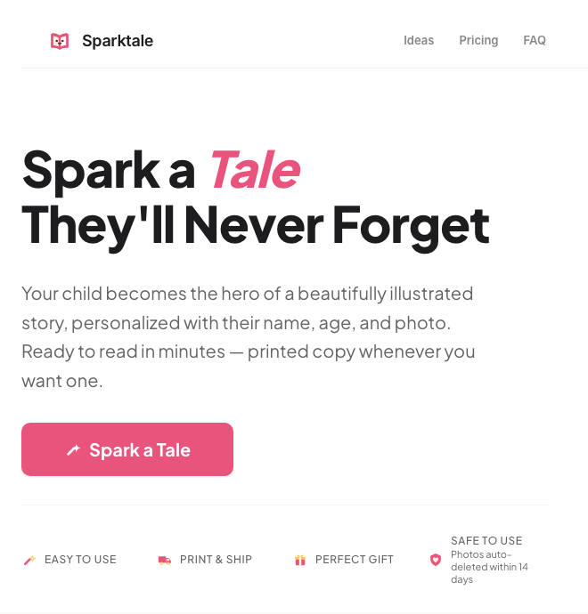

Recipient-panel skill
Get your draft challenged
AI stand-ins for the people who will read your doc list their objections before you send it.
Daniel Cohen, product lead
Years of product management experience across B2B and B2C, building with AI since November 2024 for my work and my life at home. AI helps me gather sources, catch edge cases and challenge how I frame a problem, then turn it into a practical solution sooner; the decision stays mine.
Use the tools, share them or message me to talk about them.
Recipient-panel skill
AI stand-ins for the people who will read your doc list their objections before you send it.
Product-sparring skill
Ask for the strongest counter to your plan and a test that could change your mind.
Second brain
A notes folder Claude reads at every session start, so you stop repeating who you are and what you decided.
How I work
You frame the problem, make the call and sign off. At each step AI adds sources or a counter-argument before anyone else sees your draft. Start with the part of product work you are doing now.
Leave with a problem statement and a way to judge progress.
Leave with a reason for the work and clear acceptance criteria.
Leave with review evidence and a next decision.
Side projects
Building is what I love. AI lets me build these projects myself. Every build teaches me more about AI, limits and unfinished tests included.

A child's name, a photo and a two-minute form become an illustrated book with the child as the main character. It ships printed or as a PDF, in five languages, to paying customers.
Read more about the project and decisions →Parapet read construction drawings to build a scope of work, then ran bid lists, RFQs and quote comparison for estimators. I built it alone. No scored round held my 7.5 out of 10 line, and I stopped it in Sep '26, before the estimator test that replaced the score ran.
Read more about the project and decisions →